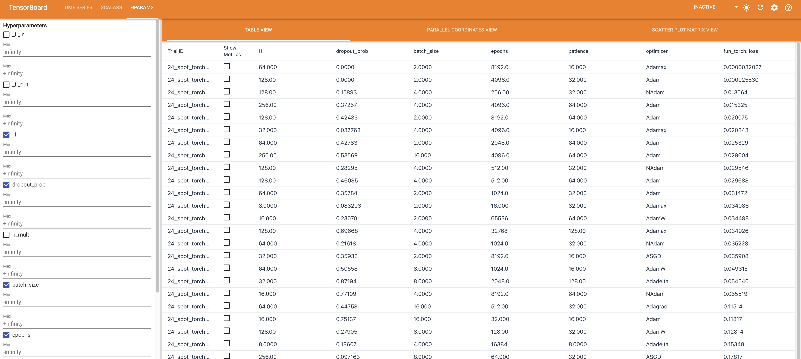
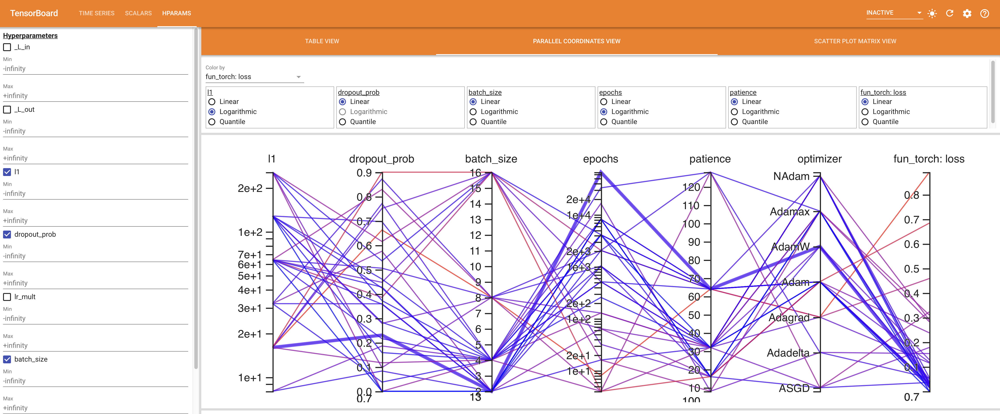
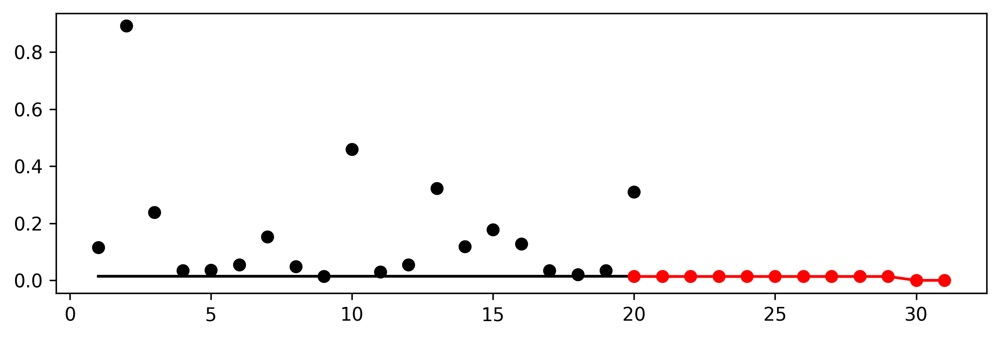
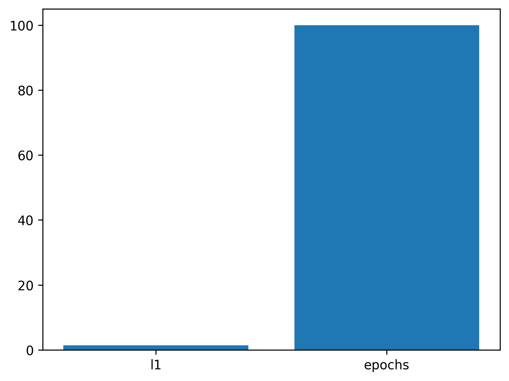
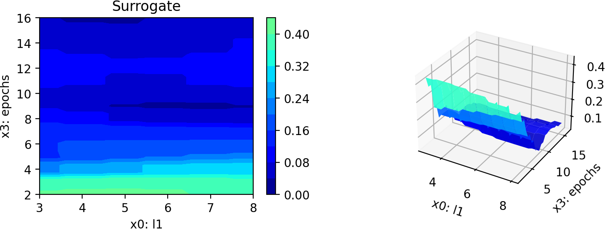
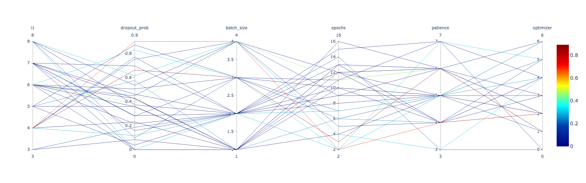

MAX_TIME = 10
INIT_SIZE = 20
DEVICE = "cpu" # "cuda:0"Hyperparameter Tuning for PyTorch With spotPython: Regression
In this tutorial, we will show how spotPython can be integrated into the PyTorch training workflow.
This document refers to the following software versions:
python: 3.10.10torch: 2.0.1torchvision: 0.15.0spotPython: 0.2.15
spotPython can be installed via pip1.
!pip install spotPythonSetup
Before we consider the detailed experimental setup, we select the parameters that affect run time, initial design size and the device that is used.
Initialization of the fun_control Dictionary
spotPython uses a Python dictionary for storing the information required for the hyperparameter tuning process. This dictionary is called fun_control and is initialized with the function fun_control_init. The function fun_control_init returns a skeleton dictionary. The dictionary is filled with the required information for the hyperparameter tuning process. It stores the hyperparameter tuning settings, e.g., the deep learning network architecture that should be tuned, the classification (or regression) problem, and the data that is used for the tuning. The dictionary is used as an input for the SPOT function.
from spotPython.utils.init import fun_control_init
fun_control = fun_control_init(task="regression",
tensorboard_path="runs/24_spot_torch_regression")PyTorch Data Loading
# Create dataset
import pandas as pd
import numpy as np
from sklearn import datasets as sklearn_datasets
from sklearn.preprocessing import MinMaxScaler
from sklearn.model_selection import train_test_split
X, y = sklearn_datasets.make_regression(
n_samples=1000, n_features=10, noise=1, random_state=123)
y = y.reshape(-1, 1)
# Normalize the data
X_scaler = MinMaxScaler()
X_scaled = X_scaler.fit_transform(X)
y_scaler = MinMaxScaler()
y_scaled = y_scaler.fit_transform(y)
# combine the features and target into a single dataframe named train_df
train_df = pd.DataFrame(np.hstack((X_scaled, y_scaled)))
target_column = "y"
n_samples = train_df.shape[0]
n_features = train_df.shape[1] - 1
train_df.columns = [f"x{i}" for i in range(1, n_features+1)] + [target_column]
X_train, X_test, y_train, y_test = train_test_split(train_df.drop(target_column,
axis=1),
train_df[target_column],
random_state=42,
test_size=0.25)
trainset = pd.DataFrame(np.hstack((X_train, np.array(y_train).reshape(-1, 1))))
testset = pd.DataFrame(np.hstack((X_test, np.array(y_test).reshape(-1, 1))))
trainset.columns = [f"x{i}" for i in range(1, n_features+1)] + [target_column]
testset.columns = [f"x{i}" for i in range(1, n_features+1)] + [target_column]
print(train_df.shape)
print(trainset.shape)
print(testset.shape)import torch
from spotPython.torch.dataframedataset import DataFrameDataset
dtype_x = torch.float32
dtype_y = torch.float32
train_df = DataFrameDataset(train_df, target_column=target_column,
dtype_x=dtype_x, dtype_y=dtype_y)
train = DataFrameDataset(trainset, target_column=target_column,
dtype_x=dtype_x, dtype_y=dtype_y)
test = DataFrameDataset(testset, target_column=target_column,
dtype_x=dtype_x, dtype_y=dtype_y)
n_samples = len(train)- Now we can test the data loading:
from spotPython.torch.traintest import create_train_val_data_loaders
trainloader, testloader = create_train_val_data_loaders(train, 2, True, 0)
for i, data in enumerate(trainloader, 0):
inputs, labels = data
print(inputs.shape)
print(labels.shape)
print(inputs)
print(labels)
break- Since this works fine, we can add the data loading to the
fun_controldictionary:
# add the dataset to the fun_control
fun_control.update({"data": train_df, # full dataset,
"train": train,
"test": test,
"n_samples": n_samples,
"target_column": target_column,})Specification of the Preprocessing Model
After the training and test data are specified and added to the fun_control dictionary, spotPython allows the specification of a data preprocessing pipeline, e.g., for the scaling of the data or for the one-hot encoding of categorical variables. The preprocessing model is called prep_model (“preparation” or pre-processing) and includes steps that are not subject to the hyperparameter tuning process. The preprocessing model is specified in the fun_control dictionary. The preprocessing model can be implemented as a sklearn pipeline. The following code shows a typical preprocessing pipeline:
categorical_columns = ["cities", "colors"]
one_hot_encoder = OneHotEncoder(handle_unknown="ignore",
sparse_output=False)
prep_model = ColumnTransformer(
transformers=[
("categorical", one_hot_encoder, categorical_columns),
],
remainder=StandardScaler(),
)fun_control.update({"prep_model": None})Select algorithm and core_model_hyper_dict
Implementing a Configurable Neural Network With spotPython
spotPython includes the Net_lin_reg class which is implemented in the file netregression.py.
from torch import nn
import spotPython.torch.netcore as netcore
class Net_lin_reg(netcore.Net_Core):
def __init__(
self, _L_in, _L_out, l1, dropout_prob, lr_mult,
batch_size, epochs, k_folds, patience, optimizer,
sgd_momentum
):
super(Net_lin_reg, self).__init__(
lr_mult=lr_mult,
batch_size=batch_size,
epochs=epochs,
k_folds=k_folds,
patience=patience,
optimizer=optimizer,
sgd_momentum=sgd_momentum,
)
l2 = max(l1 // 2, 4)
self.fc1 = nn.Linear(_L_in, l1)
self.fc2 = nn.Linear(l1, l2)
self.fc3 = nn.Linear(l2, _L_out)
self.relu = nn.ReLU()
self.softmax = nn.Softmax(dim=1)
self.dropout1 = nn.Dropout(p=dropout_prob)
self.dropout2 = nn.Dropout(p=dropout_prob / 2)
def forward(self, x):
x = self.fc1(x)
x = self.relu(x)
x = self.dropout1(x)
x = self.fc2(x)
x = self.relu(x)
x = self.dropout2(x)
x = self.fc3(x)
return x
The Net_Core class
Net_lin_reg inherits from the class Net_Core which is implemented in the file netcore.py. It implements the additional attributes that are common to all neural network models. The Net_Core class is implemented in the file netcore.py. It implements hyperparameters as attributes, that are not used by the core_model, e.g.:
- optimizer (
optimizer), - learning rate (
lr), - batch size (
batch_size), - epochs (
epochs), - k_folds (
k_folds), and - early stopping criterion “patience” (
patience).
Users can add further attributes to the class. The class Net_Core is shown below.
from torch import nn
class Net_Core(nn.Module):
def __init__(self, lr_mult, batch_size, epochs, k_folds, patience,
optimizer, sgd_momentum):
super(Net_Core, self).__init__()
self.lr_mult = lr_mult
self.batch_size = batch_size
self.epochs = epochs
self.k_folds = k_folds
self.patience = patience
self.optimizer = optimizer
self.sgd_momentum = sgd_momentum:::{.callout-note}
We see that the class Net_lin_reg has additional attributes and does not inherit from nn directly. It adds an additional class, Net_core, that takes care of additional attributes that are common to all neural network models, e.g., the learning rate multiplier lr_mult or the batch size batch_size.
spotPython’s core_model implements an instance of the Net_lin_reg class. In addition to the basic neural network model, the core_model can use these additional attributes. spotPython provides methods for handling these additional attributes to guarantee 100% compatibility with the PyTorch classes. The method add_core_model_to_fun_control adds the hyperparameters and additional attributes to the fun_control dictionary. The method is shown below.
from spotPython.torch.netregression import Net_lin_reg
from spotPython.data.torch_hyper_dict import TorchHyperDict
from spotPython.hyperparameters.values import add_core_model_to_fun_control
core_model = Net_lin_reg
fun_control = add_core_model_to_fun_control(core_model=core_model,
fun_control=fun_control,
hyper_dict=TorchHyperDict,
filename=None)The Search Space
Configuring the Search Space With spotPython
The hyper_dict Hyperparameters for the Selected Algorithm
spotPython uses JSON files for the specification of the hyperparameters. Users can specify their individual JSON files, or they can use the JSON files provided by spotPython. The JSON file for the core_model is called torch_hyper_dict.json.
spotPython can handle numerical, boolean, and categorical hyperparameters. They can be specified in the JSON file in a similar way as the numerical hyperparameters as shown below. Each entry in the JSON file represents one hyperparameter with the following structure: type, default, transform, lower, and upper.
"factor_hyperparameter": {
"levels": ["A", "B", "C"],
"type": "factor",
"default": "B",
"transform": "None",
"core_model_parameter_type": "str",
"lower": 0,
"upper": 2},The corresponding entries for the Net_lin_reg class are shown below.
"Net_lin_reg":
{
"_L_in": {
"type": "int",
"default": 10,
"transform": "None",
"lower": 10,
"upper": 10},
"_L_out": {
"type": "int",
"default": 1,
"transform": "None",
"lower": 1,
"upper": 1},
"l1": {
"type": "int",
"default": 3,
"transform": "transform_power_2_int",
"lower": 3,
"upper": 8},
"dropout_prob": {
"type": "float",
"default": 0.01,
"transform": "None",
"lower": 0.0,
"upper": 0.9},
"lr_mult": {
"type": "float",
"default": 1.0,
"transform": "None",
"lower": 0.1,
"upper": 10.0},
"batch_size": {
"type": "int",
"default": 4,
"transform": "transform_power_2_int",
"lower": 1,
"upper": 4},
"epochs": {
"type": "int",
"default": 4,
"transform": "transform_power_2_int",
"lower": 4,
"upper": 9},
"k_folds": {
"type": "int",
"default": 1,
"transform": "None",
"lower": 1,
"upper": 1},
"patience": {
"type": "int",
"default": 2,
"transform": "transform_power_2_int",
"lower": 1,
"upper": 5
},
"optimizer": {
"levels": ["Adadelta",
"Adagrad",
"Adam",
"AdamW",
"SparseAdam",
"Adamax",
"ASGD",
"NAdam",
"RAdam",
"RMSprop",
"Rprop",
"SGD"],
"type": "factor",
"default": "SGD",
"transform": "None",
"class_name": "torch.optim",
"core_model_parameter_type": "str",
"lower": 0,
"upper": 12},
"sgd_momentum": {
"type": "float",
"default": 0.0,
"transform": "None",
"lower": 0.0,
"upper": 1.0}
},Modifying the Hyperparameters
spotPython provides functions for modifying the hyperparameters, their bounds and factors as well as for activating and de-activating hyperparameters without re-compilation of the Python source code. These functions are described in the following.
Modify hyper_dict Hyperparameters for the Selected Algorithm aka core_model
After specifying the model, the corresponding hyperparameters, their types and bounds are loaded from the JSON file torch_hyper_dict.json. After loading, the user can modify the hyperparameters, e.g., the bounds. spotPython provides a simple rule for de-activating hyperparameters: If the lower and the upper bound are set to identical values, the hyperparameter is de-activated. This is useful for the hyperparameter tuning, because it allows to specify a hyperparameter in the JSON file, but to de-activate it in the fun_control dictionary. This is done in the next step.
Modify Hyperparameters of Type numeric and integer (boolean)
Since the hyperparameter k_folds is not used in the PyTorch tutorial, it is de-activated here by setting the lower and upper bound to the same value. Note, k_folds is of type “integer”.
# modify the hyperparameter levels
from spotPython.hyperparameters.values import modify_hyper_parameter_bounds
fun_control = modify_hyper_parameter_bounds(fun_control, "epochs", bounds=[2, 16])
fun_control = modify_hyper_parameter_bounds(fun_control, "patience", bounds=[3, 7])Modify Hyperparameter of Type factor
In a similar manner as for the numerical hyperparameters, the categorical hyperparameters can be modified. New configurations can be chosen by adding or deleting levels. For example, the hyperparameter optimizer can be re-configured as follows:
In the following setting, two optimizers ("SGD" and "Adam") will be compared during the spotPython hyperparameter tuning. The hyperparameter optimizer is active.
from spotPython.hyperparameters.values import modify_hyper_parameter_levels
fun_control = modify_hyper_parameter_levels(fun_control, "optimizer",
["SGD", "Adam"])The hyperparameter optimizer can be de-activated by choosing only one value (level), here: "SGD".
fun_control = modify_hyper_parameter_levels(fun_control, "optimizer", ["SGD"])As discussed in Section 0.7.4, there are some issues with the LBFGS optimizer. Therefore, the usage of the LBFGS optimizer is not deactivated in spotPython by default. However, the LBFGS optimizer can be activated by adding it to the list of optimizers. Rprop was removed, because it does perform very poorly (as some pre-tests have shown). However, it can also be activated by adding it to the list of optimizers. Since SparseAdam does not support dense gradients, Adam was used instead. Therefore, there are 10 default optimizers:
fun_control = modify_hyper_parameter_levels(fun_control, "optimizer",
["Adadelta", "Adagrad", "Adam", "AdamW", "Adamax", "ASGD", "NAdam"])
fun_control.update({
"_L_in": n_features,
"_L_out": 1,})Optimizers
Table 1 shows some of the optimizers available in PyTorch:
| Optimizer | lr | mom | weight | damp | nest | rho | lr_sc | lr_decay | betas | lambd | alpha | mom_decay | etas | step_s |
|---|---|---|---|---|---|---|---|---|---|---|---|---|---|---|
| Adadelta | - | - | 0. | - | - | 0.9 | 1.0 | - | - | - | - | - | - | - |
| Adagrad | 1e-2 | - | 0. | - | - | - | - | 0. | - | - | - | - | - | - |
| Adam | 1e-3 | - | 0. | - | - | - | - | - | (0.9,0.999) | - | - | - | - | - |
| AdamW | 1e-3 | - | 1e-2 | - | - | - | - | - | (0.9,0.999) | - | - | - | - | - |
| SparseAdam | 1e-3 | - | - | - | - | - | - | - | (0.9,0.999) | - | - | - | - | - |
| Adamax | 2e-3 | - | 0. | - | - | - | - | - | (0.9, 0.999) | - | - | - | - | - |
| ASGD | 1e-2 | 0.9 | 0. | - | False | - | - | - | - | 1e-4 | 0.75 | - | - | - |
| LBFGS | 1. | - | - | - | - | - | - | - | - | - | - | - | - | - |
| NAdam | 2e-3 | - | 0. | - | - | - | - | - | (0.9,0.999) | - | - | 0 | - | - |
| RAdam | 1e-3 | - | 0. | - | - | - | - | - | (0.9,0.999) | - | - | - | - | - |
| RMSprop | 1e-2 | 0. | 0. | - | - | - | - | - | (0.9,0.999) | - | - | - | - | - |
| Rprop | 1e-2 | - | - | - | - | - | - | - | - | - | (0.5,1.2) | (1e-6, 50) | - | - |
| SGD | required | 0. | 0. | 0. | False | - | - | - | - | - | - | - | - | - |
spotPython implements an optimization handler that maps the optimizer names to the corresponding PyTorch optimizers.
A note on LBFGS
We recommend deactivating PyTorch’s LBFGS optimizer, because it does not perform very well. The PyTorch documentation, see https://pytorch.org/docs/stable/generated/torch.optim.LBFGS.html#torch.optim.LBFGS, states:
This is a very memory intensive optimizer (it requires additional
param_bytes * (history_size + 1)bytes). If it doesn’t fit in memory try reducing the history size, or use a different algorithm.
Furthermore, the LBFGS optimizer is not compatible with the PyTorch tutorial. The reason is that the LBFGS optimizer requires the closure function, which is not implemented in the PyTorch tutorial. Therefore, the LBFGS optimizer is recommended here.
Since there are 10 optimizers in the portfolio, it is not recommended tuning the hyperparameters that effect one single optimizer only.
A note on the learning rate
spotPython provides a multiplier for the default learning rates, lr_mult, because optimizers use different learning rates. Using a multiplier for the learning rates might enable a simultaneous tuning of the learning rates for all optimizers. However, this is not recommended, because the learning rates are not comparable across optimizers. Therefore, we recommend fixing the learning rate for all optimizers if multiple optimizers are used. This can be done by setting the lower and upper bounds of the learning rate multiplier to the same value as shown below.
Thus, the learning rate, which affects the SGD optimizer, will be set to a fixed value. We choose the default value of 1e-3 for the learning rate, because it is used in other PyTorch examples (it is also the default value used by spotPython as defined in the optimizer_handler() method). We recommend tuning the learning rate later, when a reduced set of optimizers is fixed. Here, we will demonstrate how to select in a screening phase the optimizers that should be used for the hyperparameter tuning.
For the same reason, we will fix the sgd_momentum to 0.9.
fun_control = modify_hyper_parameter_bounds(fun_control,
"lr_mult", bounds=[1e-3, 1e-3])
fun_control = modify_hyper_parameter_bounds(fun_control,
"sgd_momentum", bounds=[0.9, 0.9])Evaluation
The evaluation procedure requires the specification of two elements:
- the way how the data is split into a train and a test set and
- the loss function (and a metric).
Hold-out Data Split and Cross-Validation
As a default, spotPython provides a standard hold-out data split and cross validation.
Hold-out Data Split
If a hold-out data split is used, the data will be partitioned into a training, a validation, and a test data set. The split depends on the setting of the eval parameter. If eval is set to train_hold_out, one data set, usually the original training data set, is split into a new training and a validation data set. The training data set is used for training the model. The validation data set is used for the evaluation of the hyperparameter configuration and early stopping to prevent overfitting. In this case, the original test data set is not used. The following splits are performed in the hold-out setting: \(\{\text{train}_0, \text{test}\} \rightarrow \{\text{train}_1, \text{validation}_1, \text{test}\}\), where \(\text{train}_1 \cup \text{validation}_1 = \text{train}_0\).
Note
spotPython returns the hyperparameters of the machine learning and deep learning models, e.g., number of layers, learning rate, or optimizer, but not the model weights. Therefore, after the SPOT run is finished, the corresponding model with the optimized architecture has to be trained again with the best hyperparameter configuration. The training is performed on the training data set. The test data set is used for the final evaluation of the model.
Summarizing, the following splits are performed in the hold-out setting:
- Run
spotPythonwithevalset totrain_hold_outto determine the best hyperparameter configuration. - Train the model with the best hyperparameter configuration (“architecture”) on the training data set:
train_tuned(model_spot, train, "model_spot.pt").
- Test the model on the test data:
test_tuned(model_spot, test, "model_spot.pt")
These steps will be exemplified in the following sections.
In addition to this hold-out setting, spotPython provides another hold-out setting, where an explicit test data is specified by the user that will be used as the validation set. To choose this option, the eval parameter is set to test_hold_out. In this case, the training data set is used for the model training. Then, the explicitly defined test data set is used for the evaluation of the hyperparameter configuration (the validation).
Cross-Validation
The cross validation setting is used by setting the eval parameter to train_cv or test_cv. In both cases, the data set is split into \(k\) folds. The model is trained on \(k-1\) folds and evaluated on the remaining fold. This is repeated \(k\) times, so that each fold is used exactly once for evaluation. The final evaluation is performed on the test data set. The cross validation setting is useful for small data sets, because it allows to use all data for training and evaluation. However, it is computationally expensive, because the model has to be trained \(k\) times.
Note
Combinations of the above settings are possible, e.g., cross validation can be used for training and hold-out for evaluation or vice versa. Also, cross validation can be used for training and testing. Because cross validation is not used in the PyTorch tutorial (PyTorch 2023), it is not considered further here.
Overview of the Evaluation Settings
Settings for the Hyperparameter Tuning
Table 2 provides an overview of the training evaluations.
eval |
train |
test |
function | comment |
|---|---|---|---|---|
"train_hold_out" |
\(\checkmark\) | train_one_epoch(), validate_one_epoch() for early stopping |
splits the train data set internally |
|
"test_hold_out" |
\(\checkmark\) | \(\checkmark\) | train_one_epoch(), validate_one_epoch() for early stopping |
use the test data set for validate_one_epoch() |
"train_cv" |
\(\checkmark\) | evaluate_cv(net, train) |
CV using the train data set |
|
"test_cv" |
\(\checkmark\) | evaluate_cv(net, test) |
CV using the test data set . Identical to "train_cv", uses only test data. |
"train_cv"and"test_cv"usesklearn.model_selection.KFold()internally.
Settings for the Final Evaluation of the Tuned Architecture
Training of the Tuned Architecture
train_tuned(model, train): train the model with the best hyperparameter configuration (or simply the default) on the training data set. It splits the traindata into new train and validation sets using create_train_val_data_loaders(), which calls torch.utils.data.random_split() internally. Currently, 60% of the data is used for training and 40% for validation. The train data is used for training the model with train_one_epoch(). The validation data is used for early stopping using validate_one_epoch() on the validation data set.
Testing of the Tuned Architecture
test_tuned(model, test): test the model on the test data set. No data splitting is performed. The (trained) model is evaluated using the validate_one_epoch() function.
Note: During training, shuffle is set to True, whereas during testing, shuffle is set to False.
Loss Functions and Metrics
The key "loss_function" specifies the loss function which is used during the optimization. There are several different loss functions under PyTorch’s nn package. For example, a simple loss is MSELoss, which computes the mean-squared error between the output and the target. In this tutorial we will use CrossEntropyLoss, because it is also used in the PyTorch tutorial.
Loss Function
The loss function is specified by the key "loss_function". We will use MSE loss for the regression task.
from torch.nn import MSELoss
loss_torch = MSELoss()
fun_control.update({"loss_function": loss_torch})In addition to the loss functions, spotPython provides access to a large number of metrics.
- The key
"metric_sklearn"is used for metrics that follow thescikit-learnconventions. - The key
"river_metric"is used for the river based evaluation (Montiel et al. 2021) viaeval_oml_iter_progressive, and - the key
"metric_torch"is used for the metrics fromTorchMetrics.
TorchMetrics is a collection of more than 90 PyTorch metrics2.
from torchmetrics import MeanAbsoluteError
metric_torch = MeanAbsoluteError()
fun_control.update({"metric_torch": metric_torch})Calling the SPOT Function
Now, the dictionary fun_control contains all information needed for the hyperparameter tuning. Before the hyperparameter tuning is started, it is recommended to take a look at the experimental design. The method gen_design_table generates a design table as follows:
from spotPython.utils.eda import gen_design_table
print(gen_design_table(fun_control))This allows to check if all information is available and if the information is correct. Table 3 shows the experimental design for the hyperparameter tuning. Hyperparameter transformations are shown in the column “transform”, e.g., the l1 default is 5, which results in the value \(2^5 = 32\) for the network, because the transformation transform_power_2_int was selected in the JSON file. The default value of the batch_size is set to 4, which results in a batch size of \(2^4 = 16\).
| name | type | default | lower | upper | transform |
|---|---|---|---|---|---|
| _L_in | int | 10 | 10 | 10 | None |
| _L_out | int | 1 | 1 | 1 | None |
| l1 | int | 3 | 3 | 8 | transform_power_2_int |
| dropout_prob | float | 0.01 | 0 | 0.9 | None |
| lr_mult | float | 1.0 | 0.001 | 0.001 | None |
| batch_size | int | 4 | 1 | 4 | transform_power_2_int |
| epochs | int | 4 | 2 | 16 | transform_power_2_int |
| k_folds | int | 1 | 1 | 1 | None |
| patience | int | 2 | 3 | 7 | transform_power_2_int |
| optimizer | factor | SGD | 0 | 6 | None |
| sgd_momentum | float | 0.0 | 0.9 | 0.9 | None |
The objective function fun_torch is selected next. It implements an interface from PyTorch’s training, validation, and testing methods to spotPython.
from spotPython.fun.hypertorch import HyperTorch
fun = HyperTorch().fun_torchfun_control.update({
"device": "cpu",
})The spotPython hyperparameter tuning is started by calling the Spot function. Here, we will run the tuner for approximately 30 minutes (max_time). Note: the initial design is always evaluated in the spotPython run. As a consequence, the run may take longer than specified by max_time, because the evaluation time of initial design (here: init_size, 10 points) is performed independently of max_time.
from spotPython.spot import spot
from math import inf
spot_tuner = spot.Spot(fun=fun,
lower = lower,
upper = upper,
fun_evals = inf,
fun_repeats = 1,
max_time = MAX_TIME,
noise = False,
tolerance_x = np.sqrt(np.spacing(1)),
var_type = var_type,
var_name = var_name,
infill_criterion = "y",
n_points = 1,
seed=123,
log_level = 50,
show_models= False,
show_progress= True,
fun_control = fun_control,
design_control={"init_size": INIT_SIZE,
"repeats": 1},
surrogate_control={"noise": True,
"cod_type": "norm",
"min_theta": -4,
"max_theta": 3,
"n_theta": len(var_name),
"model_fun_evals": 10_000,
"log_level": 50
})
spot_tuner.run(X_start=X_start)During the run, the following output is shown:
config: {'_L_in': 10, '_L_out': 1, 'l1': 64, 'dropout_prob': 0.4475780541539,
'lr_mult': 0.001, 'batch_size': 16, 'epochs': 512, 'k_folds': 1,
'patience': 32,'optimizer': 'Adagrad', 'sgd_momentum': 0.9}
Epoch: 1
...
Epoch: 7002
Loss on hold-out set: 1.6959798782529844e-05
MeanAbsoluteError value on hold-out data: 0.0018855303060263395
Epoch: 7003
Loss on hold-out set: 1.6984027051769603e-05
MeanAbsoluteError value on hold-out data: 0.001883985591121018
Early stopping at epoch 7002
Returned to Spot: Validation loss: 1.6984027051769603e-05Tensorboard
The textual output shown in the console (or code cell) can be visualized with Tensorboard.
Tensorboard: Start Tensorboard
Start TensorBoard through the command line to visualize data you logged. Specify the root log directory as used in fun_control = fun_control_init(task="regression", tensorboard_path="runs/24_spot_torch_regression") as the tensorboard_path. The argument logdir points to directory where TensorBoard will look to find event files that it can display. TensorBoard will recursively walk the directory structure rooted at logdir, looking for .tfevents. files.
tensorboard –logdir=runs
Go to the URL it provides OR to http://localhost:6006/.
The following figures show some screenshots of Tensorboard.



Results
After the hyperparameter tuning run is finished, the progress of the hyperparameter tuning can be visualized. The following code generates the progress plot from Figure 4.
spot_tuner.plot_progress(log_y=False, filename="./figures/" + experiment_name+"_progress.png")
Black dots denote results from the initial design. Red dots illustrate the improvement found by the surrogate model based optimization (surrogate model based optimization).Figure 4 shows a typical behaviour that can be observed in many hyperparameter studies (Bartz et al. 2022): the largest improvement is obtained during the evaluation of the initial design. The surrogate model based optimization-optimization with the surrogate refines the results. Figure 4 also illustrates one major difference between ray[tune] as used in PyTorch (2023) and spotPython: the ray[tune] uses a random search and will generate results similar to the black dots, whereas spotPython uses a surrogate model based optimization and presents results represented by red dots in Figure 4. The surrogate model based optimization is considered to be more efficient than a random search, because the surrogate model guides the search towards promising regions in the hyperparameter space.
In addition to the improved (“optimized”) hyperparameter values, spotPython allows a statistical analysis, e.g., a sensitivity analysis, of the results. We can print the results of the hyperparameter tuning, see Table 4.
print(gen_design_table(fun_control=fun_control, spot=spot_tuner))| name | type | default | lower | upper | tuned | transform | importance | stars |
|---|---|---|---|---|---|---|---|---|
| _L_in | int | 10 | 10.0 | 10.0 | 10.0 | None | 0.00 | |
| _L_out | int | 1 | 1.0 | 1.0 | 1.0 | None | 0.00 | |
| l1 | int | 3 | 3.0 | 8.0 | 6.0 | power_2_int | 1.42 | * |
| drop_p | float | 0.01 | 0.0 | 0.9 | 0.0 | None | 0.00 | |
| lr_mult | float | 1.0 | 0.001 | 0.001 | 0.001 | None | 0.00 | |
| batch_s | int | 4 | 1.0 | 4.0 | 1.0 | power_2_int | 0.01 | |
| epochs | int | 4 | 2.0 | 16.0 | 13.0 | power_2_int | 100.00 | *** |
| k_folds | int | 1 | 1.0 | 1.0 | 1.0 | None | 0.00 | |
| patience | int | 2 | 3.0 | 7.0 | 4.0 | power_2_int | 0.00 | |
| optim | factor | SGD | 0.0 | 6.0 | 4.0 | None | 0.00 | |
| sgd_mom | float | 0.0 | 0.9 | 0.9 | 0.9 | None | 0.00 |
To visualize the most important hyperparameters, spotPython provides the function plot_importance. The following code generates the importance plot from Figure 5.
spot_tuner.plot_importance(threshold=0.025, filename="./figures/" + experiment_name+"_importance.png")
Get SPOT Results
The architecture of the spotPython model can be obtained by the following code:
from spotPython.hyperparameters.values import get_one_core_model_from_X
X = spot_tuner.to_all_dim(spot_tuner.min_X.reshape(1,-1))
model_spot = get_one_core_model_from_X(X, fun_control)
model_spotFirst, the numerical representation of the hyperparameters are obtained, i.e., the numpy array X is generated. This array is then used to generate the model model_spot by the function get_one_core_model_from_X. The model model_spot has the following architecture:
Net_lin_reg(
(fc1): Linear(in_features=10, out_features=64, bias=True)
(fc2): Linear(in_features=64, out_features=32, bias=True)
(fc3): Linear(in_features=32, out_features=1, bias=True)
(relu): ReLU()
(softmax): Softmax(dim=1)
(dropout1): Dropout(p=0.0, inplace=False)
(dropout2): Dropout(p=0.0, inplace=False)
)Evaluation of the Tuned Architecture
The method train_tuned takes a model architecture without trained weights and trains this model with the train data. The train data is split into train and validation data. The validation data is used for early stopping. The trained model weights are saved as a dictionary.
The following code trains the model model_spot. If path is set to a filename, e.g., path = "model_spot_trained.pt", the weights of the trained model will be saved to this file.
from spotPython.torch.traintest import (
train_tuned,
test_tuned,
)
train_tuned(net=model_spot, train_dataset=train,
loss_function=fun_control["loss_function"],
metric=fun_control["metric_torch"],
shuffle=True,
device = DEVICE,
path=None,
task=fun_control["task"],)Epoch: 1
Loss on hold-out set: 0.17853929138431945
MeanAbsoluteError value on hold-out data: 0.3907899856567383
Epoch: 2
Loss on hold-out set: 0.17439044278115035
MeanAbsoluteError value on hold-out data: 0.38570401072502136If path is set to a filename, e.g., path = "model_spot_trained.pt", the weights of the trained model will be loaded from this file.
test_tuned(net=model_spot, test_dataset=test,
shuffle=False,
loss_function=fun_control["loss_function"],
metric=fun_control["metric_torch"],
device = DEVICE,
task=fun_control["task"],)Loss on hold-out set: 1.85966069472272e-05
MeanAbsoluteError value on hold-out data: 0.0021022311411798
Final evaluation: Validation loss: 1.85966069472272e-05
Final evaluation: Validation metric: 0.0021022311411798
----------------------------------------------
(1.85966069472272e-05, nan, tensor(0.0021))Cross-validated Evaluations
from spotPython.torch.traintest import evaluate_cv
# modify k-kolds:
setattr(model_spot, "k_folds", 10)
evaluate_cv(net=model_spot,
dataset=fun_control["data"],
loss_function=fun_control["loss_function"],
metric=fun_control["metric_torch"],
task=fun_control["task"],
writer=fun_control["writer"],
writerId="model_spot_cv", device=DEVICE)Fold: 1
Epoch: 1
Loss on hold-out set: 0.36993918985128404
MeanAbsoluteError value on hold-out data: 0.5827060341835022
Epoch: 2
Loss on hold-out set: 0.3583159705996513
(0.0027241395250238156, nan, tensor(0.0147))Table 5 shows the loss and meric value (MAE) of the model with the tuned hyperparameters from SPOT.
| Model | Loss | Metric (MAE) |
|---|---|---|
Validation |
1.8597e-05 | 0.0021 |
10-fold CV |
0.00272 | 0.0147 |
Detailed Hyperparameter Plots
The contour plot in this section visualize the interactions of the two most important hyperparameters, l1, and epochs of the surrogate model used to optimize the hyperparameters. Since some of these hyperparameters take fatorial or integer values, sometimes step-like fitness landcapes (or response surfaces) are generated. SPOT draws the interactions of the main hyperparameters by default. It is also possible to visualize all interactions. For this, again refer to the notebook (Bartz-Beielstein 2023).
filename = "./figures/" + experiment_name
spot_tuner.plot_important_hyperparameter_contour(filename=filename)
epochs and l1, i.e., the number of neurons in the layers.Figure 6 shows a contour plot of the loss as a function of the hyperparameters. These plots are very helpful for benchmark studies and for understanding neural networks. spotPython provides additional tools for a visual inspection of the results and give valuable insights into the hyperparameter tuning process. This is especially useful for model explainability, transparency, and trustworthiness. In addition to the contour plots, Figure 7 shows the parallel plot of the hyperparameters.
spot_tuner.parallel_plot()
Summary and Outlook
This tutorial presents the hyperparameter tuning open source software spotPython for PyTorch. Some of the advantages of spotPython are:
- Numerical and categorical hyperparameters.
- Powerful surrogate models.
- Flexible approach and easy to use.
- Simple JSON files for the specification of the hyperparameters.
- Extension of default and user specified network classes.
- Noise handling techniques.
- Online visualization of the hyperparameter tuning process with
tensorboard.
Currently, only rudimentary parallel and distributed neural network training is possible, but these capabilities will be extended in the future. The next version of spotPython will also include a more detailed documentation and more examples.
Important
Important: This tutorial does not present a complete benchmarking study (Bartz-Beielstein et al. 2020). The results are only preliminary and highly dependent on the local configuration (hard- and software). Our goal is to provide a first impression of the performance of the hyperparameter tuning package spotPython. The results should be interpreted with care.
Bartz, Eva, Thomas Bartz-Beielstein, Martin Zaefferer, and Olaf Mersmann, eds. 2022. Hyperparameter Tuning for Machine and Deep Learning with R - A Practical Guide. Springer.
Bartz-Beielstein, Thomas. 2023. “PyTorch Hyperparameter Tuning with SPOT: Comparison with Ray Tuner and Default Hyperparameters on CIFAR10.” https://github.com/sequential-parameter-optimization/spotPython/blob/main/notebooks/14_spot_ray_hpt_torch_cifar10.ipynb.
Bartz-Beielstein, Thomas, Carola Doerr, Jakob Bossek, Sowmya Chandrasekaran, Tome Eftimov, Andreas Fischbach, Pascal Kerschke, et al. 2020. “Benchmarking in Optimization: Best Practice and Open Issues.” arXiv. https://arxiv.org/abs/2007.03488.
Montiel, Jacob, Max Halford, Saulo Martiello Mastelini, Geoffrey Bolmier, Raphael Sourty, Robin Vaysse, Adil Zouitine, et al. 2021. “River: Machine Learning for Streaming Data in Python.”
PyTorch. 2023. “Hyperparameter Tuning with Ray Tune.” https://pytorch.org/tutorials/beginner/hyperparameter_tuning_tutorial.html.
Alternatively, the source code can be downloaded from gitHub: https://github.com/sequential-parameter-optimization/spotPython.↩︎